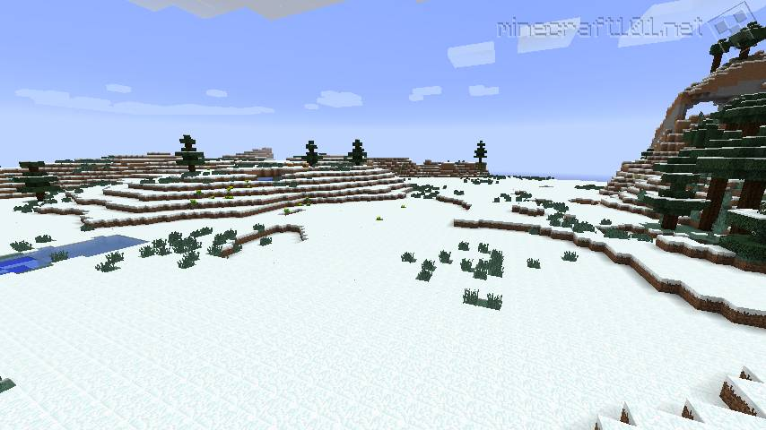
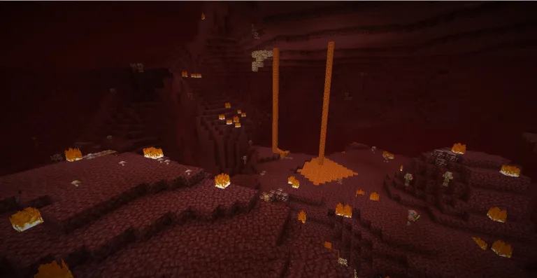

What Biomes Are There?
Overworld Biomes
Types of Plains
- Plains - A relatively flat area that may have some trees. You can find villages and farm animals like horses.
- Ice Plains - Also called snowy tundra. It's a snow and ice-covered area with vey few trees that is mostly flat but has some hills.
- Ice Spike Plains - A variant of the ice plains that have large icy spikes and glaciers that reach into the sky.
- Sunflower Plains - The only biome where sunflowers spawn.
- Snowy Plains - A snow-covered area that can have rabbits, polar bears, and strays. Igloos may generate.
- Mushroom Field - An island made of mycelium where big mushrooms grow frequently.
- Savanna - A flat, dry area that has acacia trees and lots of tall grass.
Woodlands
- Forest - Areas filled with oak and birch trees. Mushrooms, flowers, and wolves can also appear.
- Birch Forest - Variant of the forest where only birch trees appear. Wolves do not spawn here.
- Dark Forest - Forest variant filled with dark oak trees. The trees are often packed close enough together that they cover the sky, letting hostile mobs spawn even during the daytime. Woodland mansions exclusively appear in this biome.
- Flower Forest - Less trees appear in these forests, but are replaced with tons of flowers, some exclusive to these biomes. Rabbits replace wolves in these areas.
- Old Growth Birch Forest - A birch forest, but the trees are much taller.
- Taiga - A forest of spruce trees that is populated by ferns, berry bushes, foxes, and rabbits.
- Old Growth Spruce Taiga - Variant of the taiga where giant spruce trees are covered in leaf blocks.
- Old Growth Pine Taiga - Variant of the taiga that has taller and wider spruce trees. Mossy cobblestone and podzol can be found in these areas.
- Snowy Taiga - A taiga variant covered in snow. Igloos can generate in these areas.
- Jungle - A dense area of tall jungle tree. Vines commonly drape down many blocks you can find ocelots, parrots, pandas, cocas, and melons in these areas.
- Bamboo Jungle - A jungle absolutely covered in large trees and thickets of bamboo. Pandas spawn in this area more often.
- Sparse Jungle - A much less dense variation of the jungle. All the same things appear, but there is more space between everything.
- Grove - A forest of spruce trees that appear at the bottom of mountains when near a forest biome. THere is a lot of snow and powder snow along the floor.
- Cherry Grove - An area where cherry trees generated. They are easy to distinguish by their pink leave blocks that have petals that fall to the ground.
- Pale Garden - A dark, desolate area where no mobs spawn besides the creaking, a wooden creature that attacks when you're not looking and can't be defeated by attacking it directly. Find the pale oak wood set and pale moss items here.
Caves
- Deep Dark - A dark area that generates far underground. It is comprised of sculk blocks and is where ancient cities and the warden reside. Be careful making noise around sensor and shrieker blocks which will summon the warden to your position.
- Dripstone Caves - These are the exclusive locations to find dripstone blocks.
- Lush Caves - Caverns filled with moss, bushes, vines, glow berries, dripleaf plants, and other vegetations. Axolotls and tropical fish can appear here. These caves are always underground below azalea trees.
Mountains
- Jagged Peaks - Found at the top-most part of the tallest mountains, often extending beyond the reach of clouds. Underneath a layer of snow, you can find stone, coal, iron. or emerald.
- Frozen Peaks - A not-so-jagged area filled with ice, snow, and packed ice.
- Stony Peaks - Peak variations that generate in warmer areas. No snow or goats appear here.
- Snow Slopes - Areas in mountains that are covered in snow and snow powder. Igloos can generate in these areas, while goats and rabbits spawn here.
- Windswept Hills - Area filled with steep cliffs, valleys, and floating islands, Llamas and emerald can appear here.
- Windswept Forest - A windswept hills variant that is generated next to a forest. Instead of stone, it has an all-grass floor with trees.
- Windswept Gravelly Hills - Windswept jills variant tha tis mostly filled with gravel blocks.
- Meadow - Grassy area with flowers that appear near mountains. If you find a tree here, it will always have a bee nest.
- Stony Shores - Appear when a mountain generates directly next to an ocean. Lots of stone and potential for buried treasure.
- Savanna Plateau - A savanna that generates at a higher altitude in a mountainous area.
- Windswept Savanna - A savanna in a mountainous area that has very steep cliffs that can reach high into the sky.
Swamps
- Swamp - A dark hued area with shallow waters scattered around. Trees can sometimes grow out of the water and vines drape down them. Temperate frogs, blue orchids, and swamp huts appear here.
- Mangrove Swamp - A swamp variant covered in more vegetation than normal swamps. Mangrove trees appear here, and mud blocks take up much of the floor. Warm frogs spawn here.
Sandy Areas
- Badlands - A desert made of red sand. Terracotta and stained terracotta can appear frequently.
- Wooded Badlands - Coarse dirt and oak trees appear in this badlands variant.
- Eroded Badlands - Badlands variant that has large spires of terracotta that shoot into the sky.
- Beach - Sandy areas where water meets land. Turtles spawn here and buried treasure can appear underground.
- Snowy Beach - A beach variant that appears next to a frozen ocean. The sand is covered in snow and turtles do no appear here.
- Desert - Large areas filled with sand, sandstone, cacti, and sometimes fossils buried away. Husks can spawn at nighttime. Desert villages, wells, and pyramids appear here.
Water Areas
- River - Stretches of water blocks that cut through land and often lead into oceans. Salmon, squid, and drowned spawn in these waters.
- Frozen River - A variant of the river when it cuts through snow biomes and is covered in ice. Salmon and drowned still spawn underwater, but rabbits and polar bears appear on top of the ice.
- Ocean - A basic ocean where seagrass, kelp, and fish commonly abound.
- Cold Ocean - Made of a deep-blue hue and less aquatic wildlife than other ocean biomes. Large groups of kelp can grow here.
- Deep Ocean - Deeper than regular oceans. You can find underwater ravines here with plenty of magma blocks that pull you down. There are variants of these that include lukewarm, cold, and frozen oceans.
- Frozen Ocean - Contains only salmon, squid, and ocean monuments. Where there's ice glaciers, you can sometimes find polar bears on the surface of the water.
- Lukewarm Ocean - Does not contain coral reefs but feature more seagrass, cod, salmon, and kelp.
- Warm Ocean - Look vibrant. These biomes can naturally generate coral reefs and where you can find dolphins, pufferfish, and tropical fish.
The Nether Biomes
- Nether Wastes - The general look for The Nether. Netherrack is everywhere, with clumps of glowstone mixed in. Large lakes of lava are common, and you will see many of the usual hostile mobs like ghasts, piglins, and magma cubes appear here.
- Soul Sand Valley - While soul sand and soul soil can pop up in various aras of The Nether, it is in abundance in this biome. Because of all the soul blocks, you will run much slower here unless you have the Soul Speed enchantment on some boots.
- Basalt Deltas - These areas are very gray, giving the impression of ash left over from volcanic activity. Basalt and blackstone are plentiful here and this is the only Nether biome where bastion remnant do not appear.
- Crimson Forest - Warped and crimson fungus are plentiful here. The fungus structures have weeping vines and shroonmlights. Piglins and hoglins are plentiful here, so be sure to have gold to barter with.
- Warped Forest - Only striders and endermen appear in these blue fungus areas. Warped nylium, warped roots, nether sprouts, and warped wart blocks can be commonly found here.
The End Biomes
- The End - A central island of The End where the ender dragon is. End crystals sit at the top of large obsidian spires and endermen walk around the ground freely.
- End Barrens - Outer portion of The End that sit on the edge of islands. Nothing appears here besides endermen.
- End Highlands - Outer portion of The End where both end cities and chorus fruit appear. These are located at higher elevation than other biomes here.
- End Midlands - Outer portion of The End where end cities can appear, through chorus fruit does not.
- Small End Islands - These small floating islands are barren but appear packed together for you to traverse through The End.
What Mobs Are There?
These are only some mobs
- Creeper (Hostile) - A silent fellow that can sneak up on you and blow up.
- Zombie (Hostile) - Slow and not very smart. It is very persistent.
- Cow (Passive) - A common sight in many Minecraft biomes and can be found mooing about in grassy areas, minding its own business in small herds.
- Pig (Passive) - A common sight as well. Is a great friend (or food). With the right equipment (a saddle and carrot stick), you can even use it as a mount and take it for a ride across the overworld.
- Sheep (Passive) - Sheep can provide you with both food and wool, which is a useful material in many crafting recipes and can be dyed into different colors. To collect wool, you'll need a pair of shears to cut them.
- Chicken (Passive) -
- Wolf (Neutral) - A tamable mob. There are many types of wolves found in different biomes. Such as Pale Wolf (Taiga), Ashen Wolf (Snowy Taiga), Woods Wolf (Forest), Black Wolf (Old Growth Pine Taiga), Chestnut Wolf (Old Growth Spruce Taiga), Rusty Wolf (Sparse Jungle), Spotted Wolf (Savanna Plateau), Striped Wolf (Wooded Badlands), and Snowy Wolf (Grove). Will only attack you if you hit them.
- Skeleton (Hostile) - With bow and arrow, they launch volley after volley at you from a distance. A good way to dodge their arrows is to move sideways or protect yourself with a hefty shield.
- Phantom (Hostile) - If you're out walking late at night and suddenly hear a screech coming from the sky, chances are you've encountered this fearsome terror. The phantom is a flying mob that appears if you haven't slept for a few in-game days.
- Villager (Passive) - Villagers are friendly NPCs that you can do trade with, which can be beneficial as they are talented workers and artisans. They can be found in villages across the overworld, all with different aesthetics depending on the biome it resides in.
- Illager (Hostile) - Villager's grumpy relatives that come in different types. Such as evoker, vindicator, or pillager. Armed to the teeth with crossbows, axes, and even magic, the pesky illagers will attack you on sight, regardless of the time of day. They can be found guarding certain types of structures in the overworld. They even attack poor and often defenseless villages from time to time.
- Enderman (Neutral) - Tall mysterious enderman is neutral mob that can be seen during late nights. They can teleport and hate the rain. This mob can become hostile when attacked or stared at.
Biome Table
not all biomes that I've listed only some.
| Biome | Photo |
|---|---|
| Plains | |
| Ice Plains |  |
| Savanna | |
| Forest | |
| Dark Forest | |
| Old Growth Pine Taiga | |
| Sparse Jungle | |
| Deep Dark | |
| Dripstone Cave | |
| Lush Cave | |
| Jagged Peaks | |
| Stony Shores | |
| Windswept Gravelly Hills |  |
| Swamp | |
| Mangrove Swamp | |
| Warm Ocean |  |
| Nether Wastes |  |
| Crimson Forest | |
| The End |